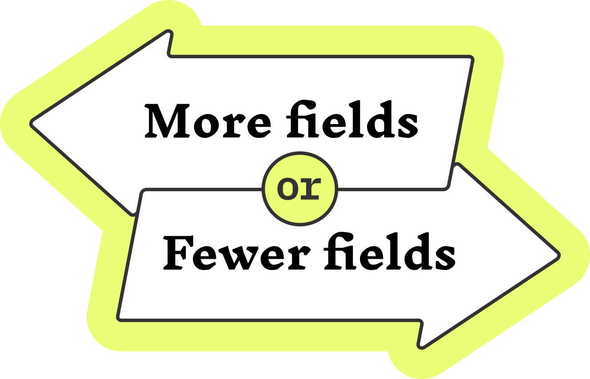
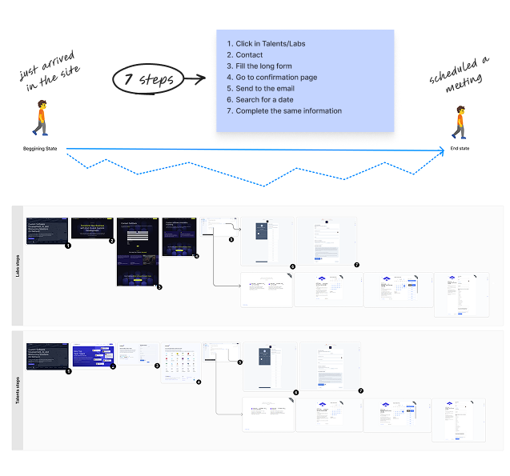
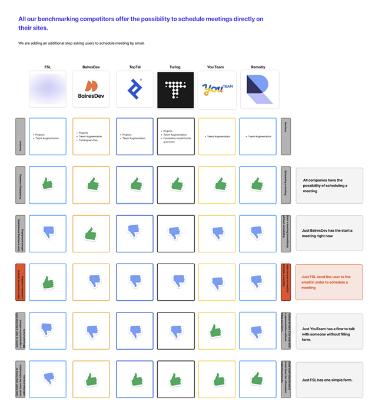
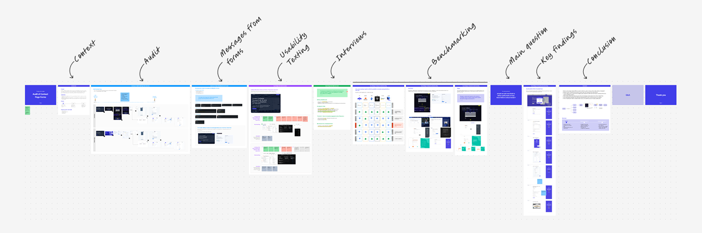
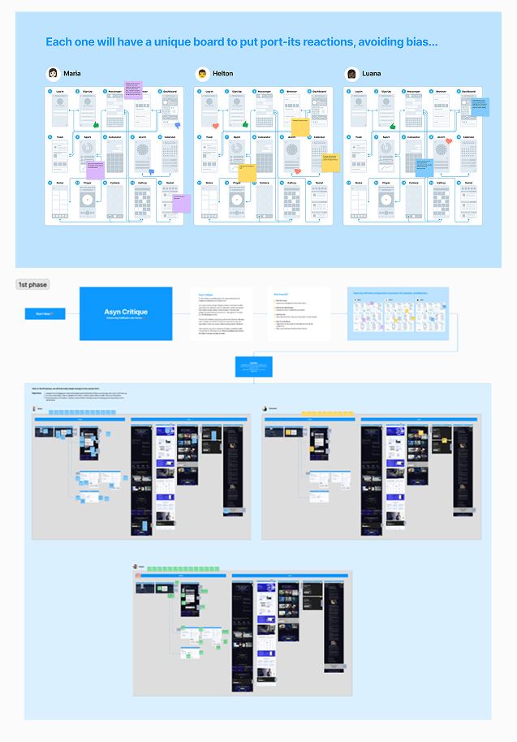
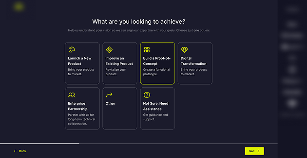
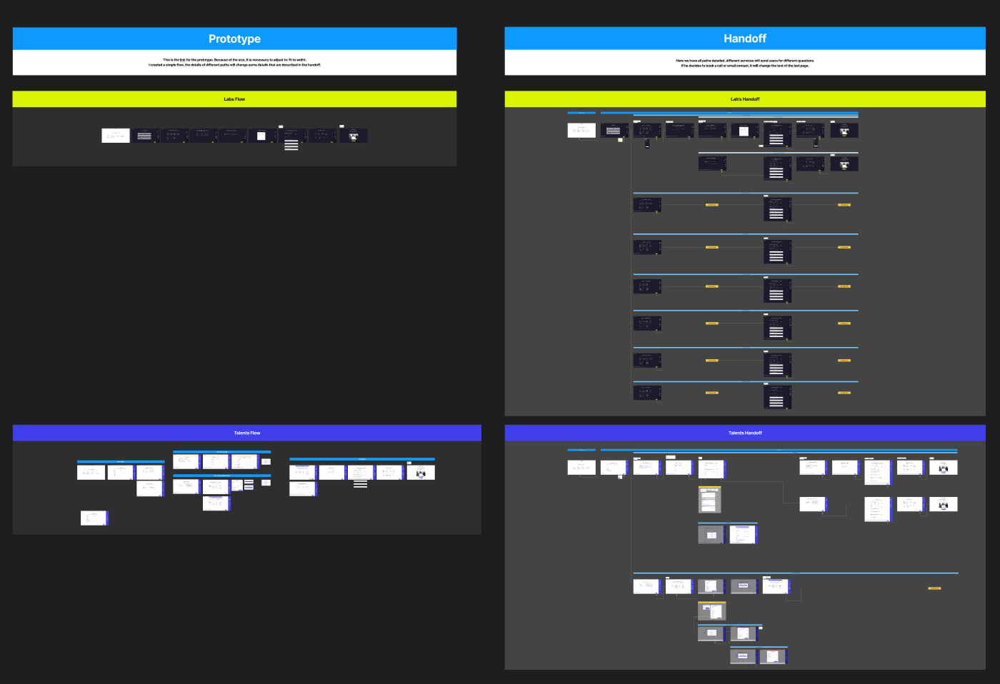
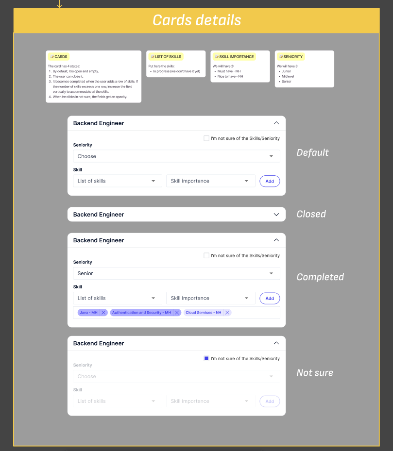
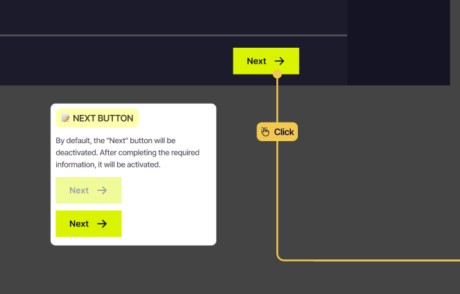
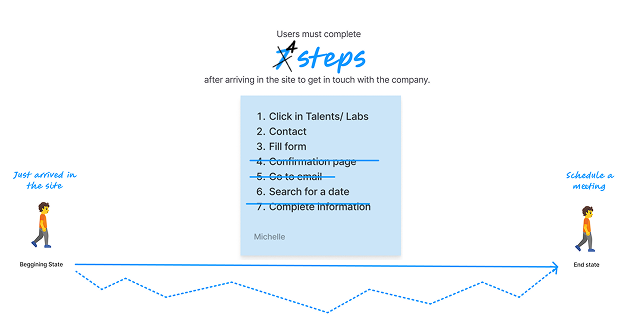

Refining contact forms to reduce friction, increase submissions, and improve lead quality across the funnel.
| Project | Redesign contact forms to reduce friction, increase qualified submissions, and improve data quality for internal teams. |
| Role | Senior Product Designer — led research, design, and handoff. Collaborated with development, design leadership, and marketing. |
| Goals |
Increase form submissions · Capture more qualified leads · Reduce friction · Improve data consistency
|
| Process | Audit · Interviews · Usability testing · Benchmarking · Wireframes → Multi-step flows · Async critique · Prototype · Handoff |
| Outcomes | Higher submission rates · Better lead quality · More consistent data · Reduced drop-off across multi-step flow |
Note: This project is shared with permission. Sensitive details and company name have been omitted.
Users faced long, repetitive fields with little guidance. There was no clear sense of progress or purpose — just a wall of inputs to get through.
Internal teams received inconsistent or incomplete data on the other end. Submissions existed, but not always from the right people — or with the right information.
Should we add more fields to better qualify leads — or keep fewer fields to reduce friction? This created a tension between Marketing, who wanted shorter forms for higher conversions, and Sales, who needed more data to qualify leads effectively.

The answer wasn't choosing a side. It was improving how forms guide people through the process — so the right information arrived at the right time, without adding friction.
When forms are clear, the right people complete them. When data is structured, teams can act on it. Both sides win.
The key insight was simple: one screen, one decision. Multi-step forms reduce cognitive load by breaking the experience into smaller, focused moments.
Wireframes explored different ways to sequence the questions — prioritizing what mattered most to move forward, and deferring what could come later.

Audit Summary of Existing Forms and Process

Key Findings in Competitive Benchmarking

Figjam Documentation
Instead of a group review where the first voice shapes the room, I duplicated Figma screens — one copy per stakeholder. Each person annotated independently, without seeing other comments first.
This keeps feedback honest. Patterns across stakeholders carry real weight. Outliers become a conversation starter, not a veto.
Why this matters: In group reviews, early opinions anchor the rest. Async critique removes that dynamic and surfaces what people actually think.

Asynchronous critique setup — each stakeholder reviewed an independent copy to avoid anchoring bias
After critique, I translated the refined design into a navigable prototype in Figma. The goal was to validate the full experience — not just individual screens.
Testing with a real flow surfaces things a static screen never will: hesitation moments, unclear labels, and transitions that feel off.

Final prototype screens — the complete guided flow ready for usability testing

Handoff documentation — field specs, states, and conditional logic for the dev team


Every detail accessible to the developer — states, conditional logic, and specs per component
Users moved forward with less hesitation. The new flow gave them a sense of progress and purpose — something the original form never offered.
Teams received more consistent and useful data on the other side. The redesign didn't just improve the experience — it made the data actionable.

Before → After: the shift from a single long form to a structured, guided experience
They are about guidance. When users understand what to do, they complete. When the data is structured, the business benefits.
The redesign succeeded not because we removed friction, but because we replaced confusion with clarity — at every step of the way.
The real unlock wasn't simplifying the form — it was making the path forward obvious. When people know what comes next and why it matters, they keep going.